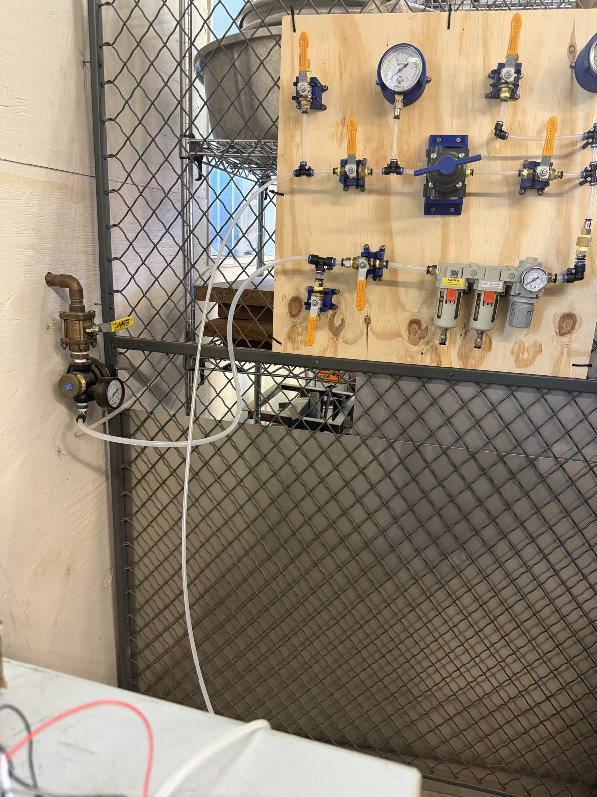
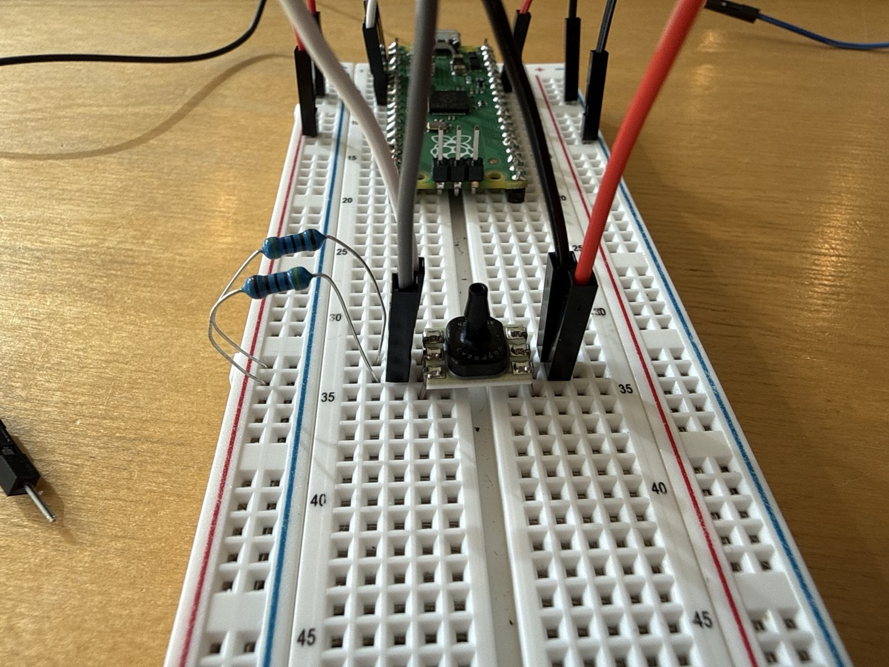
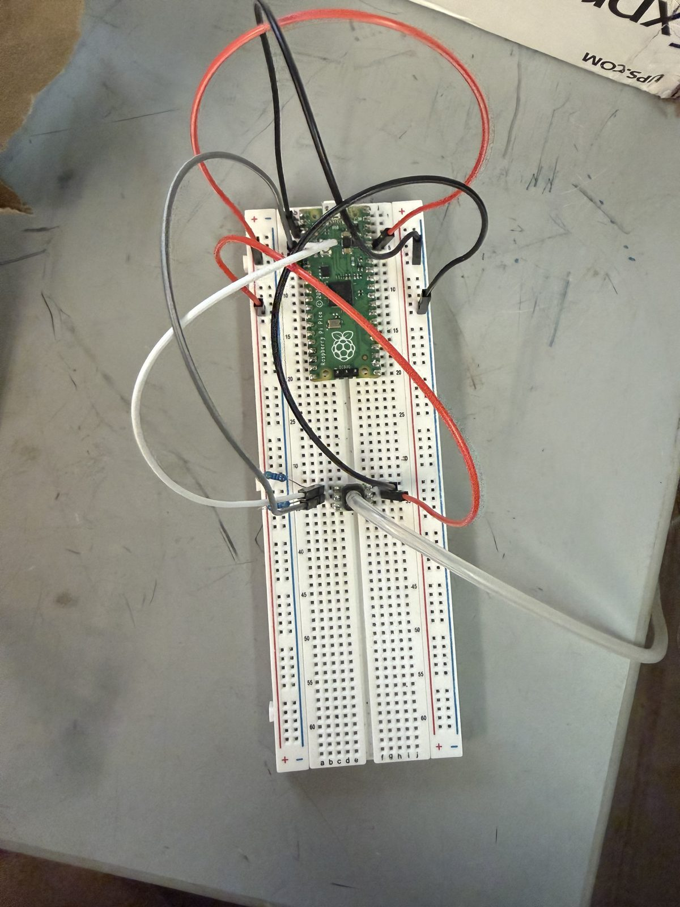
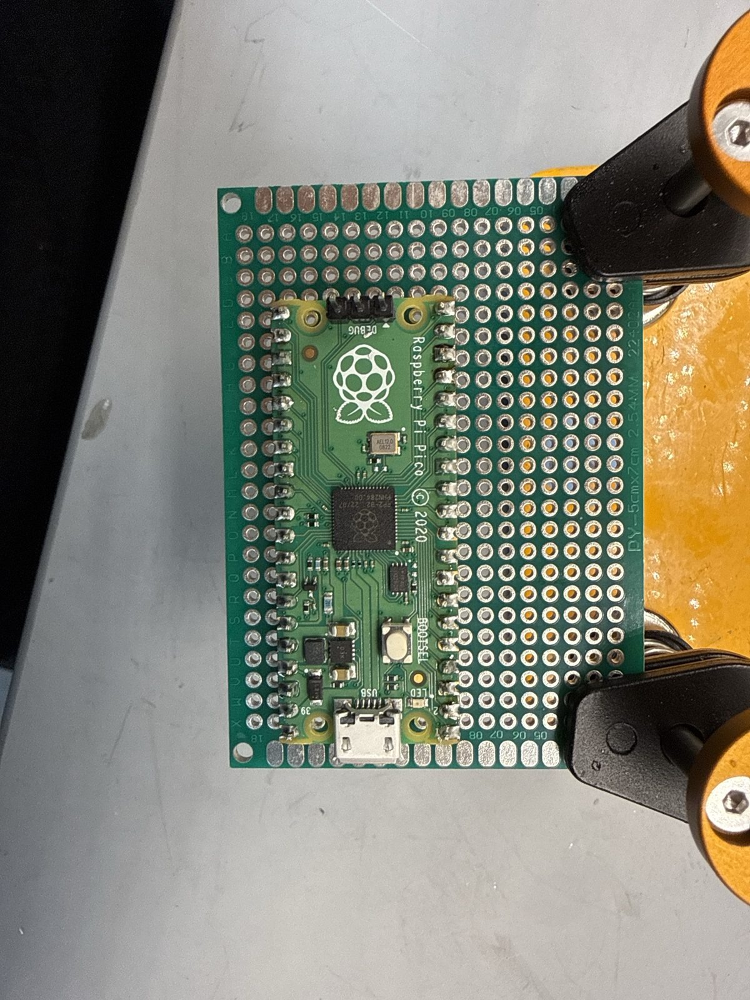
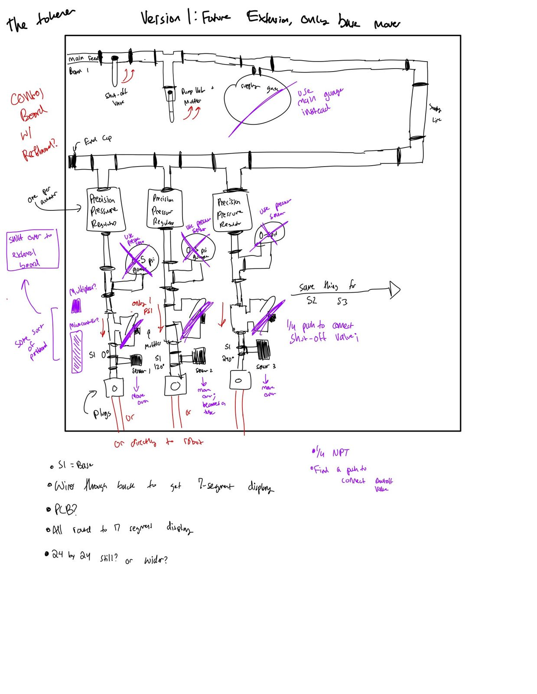

Problem: The vine robot steers with air pressure, so it needs accurate pressure readings and a separately controlled air channel for each direction.
Role: Research assistant in an independent study with Aditi Lagisetty. The sensing hardware, firmware and steering board design on this page are my current contributions.
Result: A Pico pressure-sensing board with C firmware, with noise down to a few thousandths of a psi, and a 6-channel steering board design.
This is an independent study on the mechanics and modeling of vine-inspired soft growing robots, with Aditi Lagisetty. Our advisor is John Bell. Aditi and I share the study, but everything shown on this page is work I did myself.
The robot steers with air pressure. As such, I had to calibrate the Honeywell ABP pressure sensor, create the code, and implement our selected microcontroller.

The lab's existing air supply.
I wired up a Raspberry Pi Pico that reads a Honeywell ABP pressure sensor over I²C. The sensor sends a raw 14-bit value, and I mask out the status bits. My firmware is in C. It throws out bad readings and zeroes the sensor at startup, and the noise is down to a few thousandths of a psi.

The Pico and the sensor on a breadboard.

With tubing hooked up to the sensor for testing.

Soldering header pins onto the Pico, using a perfboard to hold the pins straight.
I'm building a second board that runs next to the steering board and reads 6 Honeywell ABP 0-5 psi sensors through a multiplexer. The sensors are spread over the robot's three sections: 3 at the base (S1), 2 in the middle (S2) and 1 at S3.
I designed a steering control board with 6 separate pressure channels. Each one has its own regulator, pressure sensor, and vent valve, so the robot can have 6 degrees of freedom. The air manifold can be expanded: it has 2 degrees of steering now, and room to go to 5 or more. I'm starting construction on the steering board, based on this sketch.

Version 1 steering board sketch. The purple notes are changes I made after meeting with advisor John Bell, like swapping the gauges for pressure sensors and moving the electronics to a separate board.